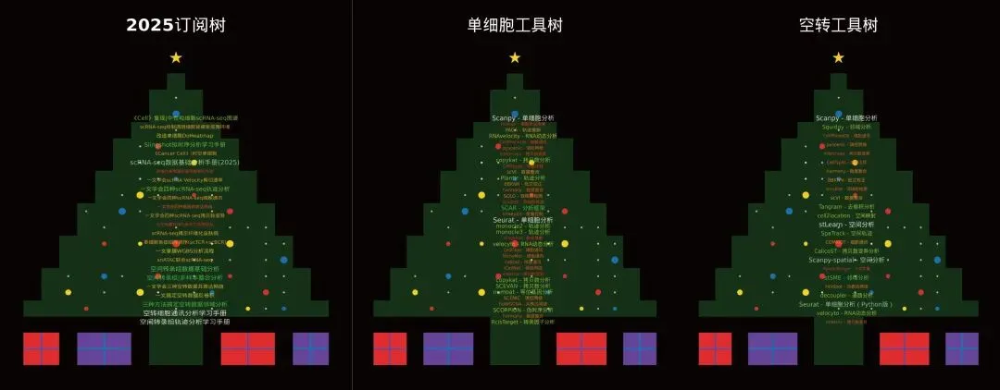

用R语言画生信基地圣诞树~
原文：https://mp.weixin.qq.com/s?__biz=MzAwMzIzOTk5OQ==&mid=2247533658&idx=1&sn=8c168f77110484d2777cb87ea3dd244a&chksm=9b3c3d0aac4bb41c1c20f254600b27ff38999cb4e66d4b0790c49d19e39002002b20eaad3e2f#rd 合集：生信基地
生信基地圣诞树~
MERRY CHRISTMAS
写在前面
预祝大家圣诞节快乐！Merry Christmas！愿大家在这冬日里邂逅所有美好与惊喜，科研顺利，文章多多~圣诞节来临意味着2025年也快进入尾声，Biomamba 生信基地 在这一年里为大家呈现许多丰富的内容，其中包含三个全程班(R语言 scRNA-seq分析、Python scRNA-seq分析和Python 空间转录组分析)和2025年订阅资料。这里我主要展示我们手册和课程中使用到的工具，并绘制了三个圣诞树：2025订阅圣诞树 ，单细胞工具圣诞树、空转工具圣诞树，供大家学习和参考。（圣诞树代码：参考如何用R语言生成词云和Jodie Burchel的教程[1]）——Biomamba如果需要 单细胞数据分析教学、生信热点全文复现、自测数据个性化分析辅导、常态化实验学习，欢迎联系客服微信[Biomamba_zhushou]。
圣诞树展示
生信基地圣诞树，文末有大图~

2025订阅圣诞树的词条为：《Cancer Cell》|时空单细胞揭示CRC的PD-1治疗免疫细胞动态
代码复现|吞噬作用增强肿瘤中巨噬细胞的氧化代谢和免疫抑制特征
肿瘤异质性分析必备| 一文学会四种scRNA-seq拷贝数变异分析
代码复现| scRNA-seq揭示人纤维化皮肤病中的成纤维细胞异质性与增殖
《NC》代码复现|snATAC联合scRNA-seq揭示小鼠肾脏细胞分化程序与疾病靶点
三种方法教你搞定空转数据邻域分析：squidpy+stSME+NMF分解
空转细胞通讯分析学习手册：CellPhoneDB+Commot+stLearn
《Nature Genetics》文献复写 | 结直肠癌免疫细胞的高清空转分析（Visium HD+Xeniu）
向下滑动查看更多内容
单细胞圣诞树的词条为：
Python版本的是我们2026年的订阅合集，欢迎大家订阅和关注~
向下滑动查看更多内容
空间转录组圣诞树的词条为：
向下滑动查看更多内容
圣诞树绘制代码